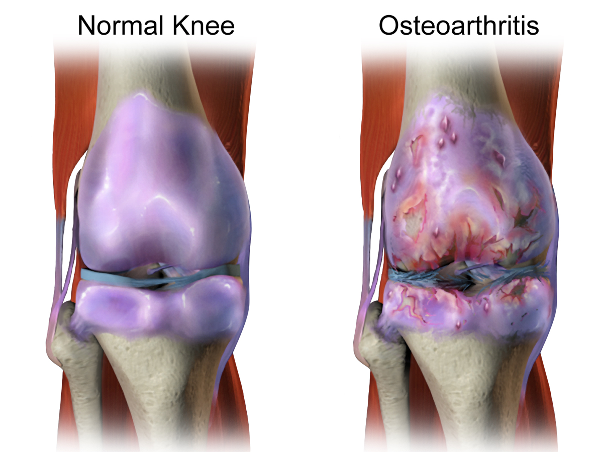
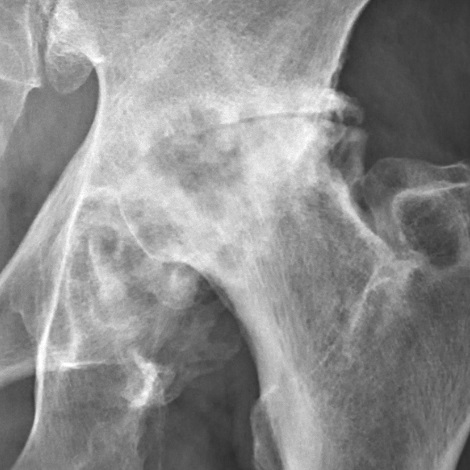
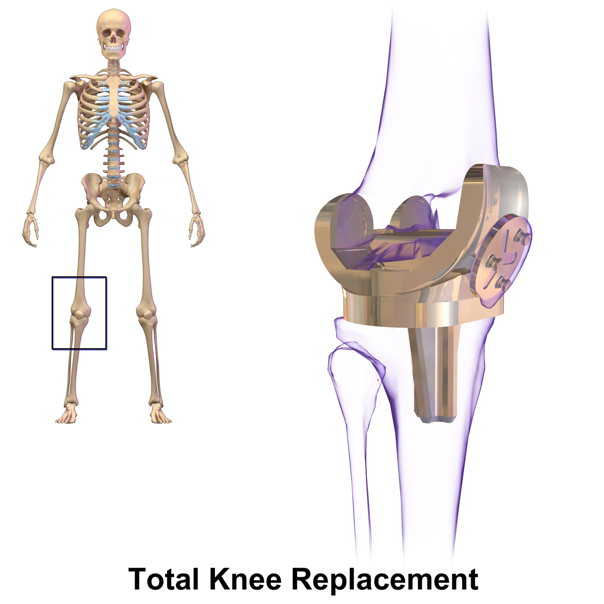
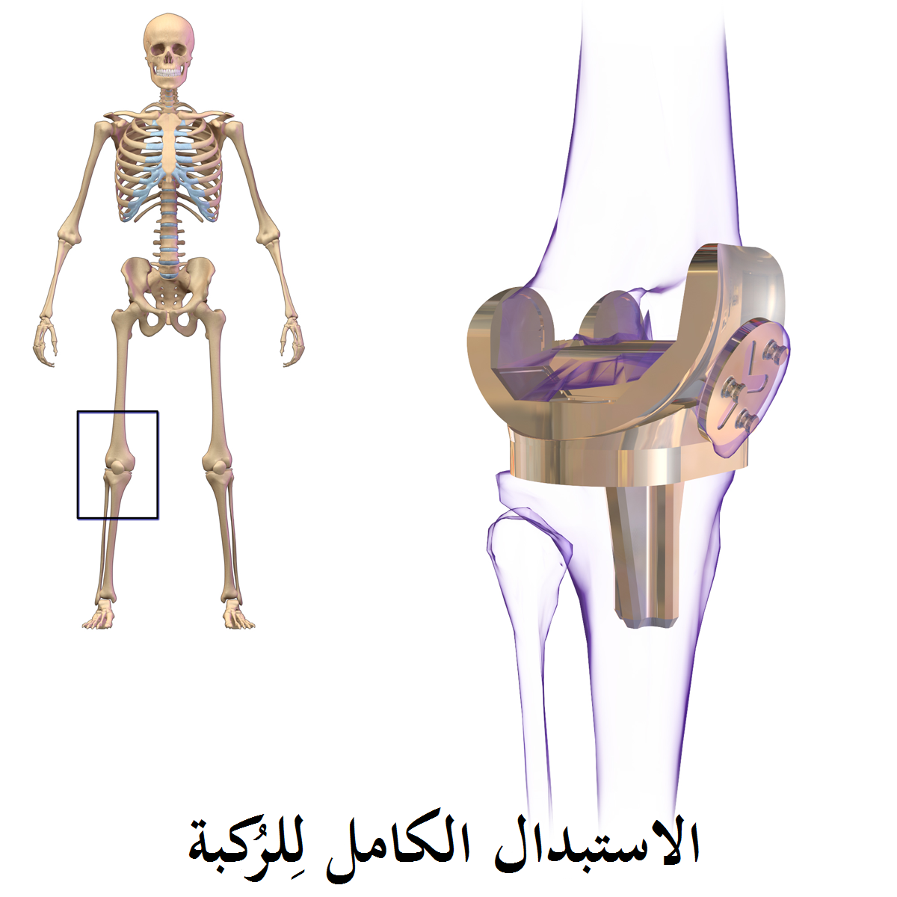

Проверено ChatGPT 03.11.2026, с правками
Что происходит в изношенном суставе
При артрозе меняются разные ткани сустава, в том числе хрящ и кость. Суставной хрящ может истончаться, по краям костей могут образовываться костные разрастания — остеофиты. Боль, скованность и ограничение движений у разных людей выражены по-разному. При тяжёлом повреждении хряща возможен контакт костных поверхностей, а со временем — изменение формы сустава. Боль не означает, что операция обязательно нужна: существуют способы лечения без операции.
Источник: NIAMS; AAOS OrthoInfo; NICE, 2022
Так выглядит артроз

Артроз тазобедренного сустава на рентгене

Обезболивающие годами: в чём риск
Противовоспалительные обезболивающие — например, ибупрофен, напроксен и диклофенак — могут уменьшать боль и улучшать функцию сустава. Но принимать их месяцами без оценки врача не следует. Возможные осложнения включают язвы и кровотечения желудка или кишечника, нарушения работы почек, повышение артериального давления и сердечно-сосудистые события. Некоторые осложнения возникают даже без предварительных симптомов; риск часто возрастает при высоких дозах и длительном лечении.
Ректальные свечи с диклофенаком не защищают желудок и кишечник от этих осложнений: препарат всасывается в кровь. В официальной инструкции к свечам также есть предупреждения о желудочно-кишечном кровотечении.
Риск особенно важно обсудить с врачом при перенесённой язве или кровотечении, заболеваниях сердца, почек или печени, в пожилом возрасте, а также при приёме препаратов, влияющих на свёртывание крови, гормональных противовоспалительных препаратов или некоторых антидепрессантов. Не сочетайте самостоятельно несколько противовоспалительных обезболивающих.
Если требуется лекарство при артрозе колена, рекомендации предлагают прежде всего противовоспалительный гель для нанесения на кожу. Таблетки применяют, если местное лечение не помогло или не подходит. Используют минимальную эффективную дозу на максимально короткий срок. При приёме таких таблеток врач назначает защиту желудка, например препарат, снижающий кислотность. Эта защита уменьшает отдельные риски, но не делает лечение полностью безопасным.
Источник: AAOS, 2023; NICE, 2022; FDA, 2024; SmPC diclofenac supp., 2025
Срочно за помощью — при этих признаках
Если на фоне приёма противовоспалительного обезболивающего появились рвота кровью, чёрный дегтеобразный стул, кровь в стуле, обморок или резкая слабость с подозрением на кровотечение — не принимайте следующую дозу и немедленно вызывайте скорую помощь по номеру 101 («Маген Давид Адом»).
Если появилась сильная или не проходящая боль в животе — прекратите приём этого обезболивающего и срочно свяжитесь с врачом. При боли в груди, внезапной одышке, слабости в одной половине тела или нарушении речи сразу вызывайте экстренную помощь.
Источник: FDA, 2024; SmPC diclofenac supp., 2025
Когда обсуждают замену сустава
Направление к ортопеду для обсуждения эндопротезирования рассматривают, если боль, скованность, снижение функции или нарастающая деформация сустава существенно ухудшают качество жизни, а лечение без операции не помогает или не подходит. Решение о направлении основано на клинической оценке, а не только на баллах опросников или снимке. Возраст, масса тела, курение и сопутствующие заболевания сами по себе не должны автоматически исключать направление, но могут влиять на риски и подготовку к операции. Окончательное решение принимают пациент и хирург после обсуждения ожидаемой пользы, альтернатив и возможных осложнений.
Источник: NICE, 2022
Что даёт ожидание
Длительное ожидание при выраженном артрозе может сопровождаться усилением ограничений, снижением физической активности и качества жизни. В систематическом обзоре 2024 года, включившем почти 90 тысяч пациентов, в период ожидания операции в среднем ухудшались функция сустава и качество жизни. При этом обзор не позволил надёжно установить, влияет ли сама продолжительность ожидания на результат после операции. Отдельные более ранние наблюдательные исследования связывали худшую функцию до операции или более длительное ожидание с менее благоприятными исходами, но это не доказывает, что ожидание является их причиной.
Не нужно годами терпеть боль без повторной оценки лечения. Это не означает, что операция необходима немедленно: её сроки и целесообразность обсуждаются индивидуально.
Источник: Cooper et al., 2024; Fortin et al., 1999; Garbuz et al., 2006
Современная операция
При эндопротезировании повреждённые суставные поверхности заменяют искусственными компонентами. У многих пациентов после операции уменьшается боль и улучшается подвижность. В одном канадском исследовании, опубликованном в 2009 году, об общей удовлетворённости сообщили 89% пациентов после замены тазобедренного сустава и 81% после замены коленного сустава. Эти данные относятся к участникам конкретного исследования и не гарантируют такой результат каждому человеку. Как и любая операция, эндопротезирование имеет риски; решение принимают после обсуждения с ортопедом.
Источник: Bourne et al., 2010
Эндопротез тазобедренного сустава

Эндопротез коленного сустава

Официальные источники
- NICE, 2022, NG226, Osteoarthritis in over 16s, пункты 1.3, 1.4, 1.6
- AAOS, 01.12.2023, Management of Osteoarthritis of the Hip, CPG, рекомендации по НПВП и хирургическому доступу, с. 8, 34–35
- FDA, ноябрь 2024, Celebrex (celecoxib) FDA Prescribing Information, boxed warning; разделы 5 и Medication Guide
- emc / зарегистрированная в Великобритании SmPC, Diclofenac Sodium 100 mg Suppositories, 19.09.2025, разделы 4.4–4.5 и 5.2
- NIAMS/NIH, Osteoarthritis: Overview, Symptoms & Causes, официальная страница
- AAOS OrthoInfo, Osteoarthritis of the Hip, официальная информация для пациентов
- Cooper GM et al., Scientific Reports 2024, систематический обзор и метаанализ, n = 89 996; DOI 10.1038/s41598-024-58050-6
- Fortin PR et al., Arthritis & Rheumatism 1999, предоперационная функция и исходы; PMID 10446873
- Garbuz DS et al., Clinical Orthopaedics and Related Research 2006, ожидание операции и исходы; PMID 16505716
- Bourne RB et al., Clinical Orthopaedics and Related Research 2009/2010, удовлетворённость после замены бедра/колена: 89%/81%; PMID 19760472
- Маген Давид Адом — официальный сайт
נבדק ע"י ChatGPT ב־03.11.2026, עם תיקונים
מה קורה במפרק שנשחק
באוסטאוארתריטיס חלים שינויים ברקמות שונות של המפרק, ובהן הסחוס והעצם. הסחוס המפרקי עלול להידקק, ובשולי העצמות עלולות להיווצר בליטות גרמיות הנקראות אוסטאופיטים. עוצמת הכאב, הנוקשות וההגבלה בתנועה משתנה מאדם לאדם. כאשר הסחוס נפגע באופן חמור, ייתכן מגע בין משטחי העצם, ועם הזמן ייתכן גם שינוי בצורת המפרק. כאב אינו אומר שחייבים לעבור ניתוח: קיימות גם אפשרויות טיפול ללא ניתוח.
מקור: NIAMS; AAOS OrthoInfo; NICE, 2022
כך נראית שחיקת מפרק
שחיקה של מפרק הירך בצילום רנטגן
משככי כאבים במשך שנים: מה הסיכון
נוגדי דלקת לשיכוך כאב, למשל איבופרופן, נפרוקסן ודיקלופנק, עשויים להפחית כאב ולשפר את תפקוד המפרק. עם זאת, אין ליטול אותם במשך חודשים ללא הערכה רפואית. סיבוכים אפשריים כוללים כיבים ודימום בקיבה או במעיים, פגיעה בתפקוד הכליות, עלייה בלחץ הדם ואירועים לבביים וכלי דם. חלק מהסיבוכים עלולים להופיע גם ללא סימני אזהרה מוקדמים; הסיכון עולה לעיתים קרובות במינונים גבוהים ובטיפול ממושך.
נרות דיקלופנק המוחדרים לפי הטבעת אינם מגינים על הקיבה והמעיים מפני סיבוכים אלה: התרופה נספגת לזרם הדם. גם בעלון הרשמי של הנרות מופיעות אזהרות על דימום במערכת העיכול.
חשוב במיוחד להתייעץ עם רופא אם היה בעבר כיב או דימום, אם קיימת מחלת לב, כליות או כבד, בגיל מבוגר, וכן בעת שימוש בתרופות המשפיעות על קרישת הדם, בסטרואידים נוגדי דלקת או בחלק מהתרופות לטיפול בדיכאון. אין לשלב על דעת עצמכם כמה משככי כאבים נוגדי דלקת.
אם נדרש טיפול תרופתי בשחיקת ברך, ההנחיות ממליצות תחילה על ג׳ל נוגד דלקת למריחה על העור. שוקלים טבליות אם הטיפול המקומי אינו יעיל או אינו מתאים. יש להשתמש במינון היעיל הנמוך ביותר ולמשך הזמן הקצר ביותר. בעת נטילת טבליות כאלה הרופא רושם טיפול להגנה על הקיבה, למשל תרופה המפחיתה את חומציות הקיבה. טיפול זה מפחית חלק מהסיכונים, אך אינו הופך את השימוש לבטוח לחלוטין.
מקור: AAOS, 2023; NICE, 2022; FDA, 2024; SmPC diclofenac supp., 2025
פנו לעזרה מיד אם מופיעים הסימנים האלה
אם בזמן נטילת משכך כאבים נוגד דלקת מופיעים הקאה של דם, צואה שחורה כזפת, דם בצואה, עילפון או חולשה פתאומית וקשה המעלה חשד לדימום — אל תיקחו מנה נוספת והזעיקו מיד אמבולנס של מגן דוד אדום בטלפון 101.
אם מופיע כאב בטן חזק או כאב שאינו חולף — הפסיקו ליטול את משכך הכאבים ופנו בדחיפות לרופא. במקרה של כאב בחזה, קוצר נשימה פתאומי, חולשה בצד אחד של הגוף או הפרעה בדיבור — הזעיקו מיד עזרה רפואית דחופה.
מקור: FDA, 2024; SmPC diclofenac supp., 2025
מתי שוקלים החלפת מפרק
שוקלים הפניה לאורתופד לצורך דיון בהחלפת מפרק כאשר כאב, נוקשות, ירידה בתפקוד או עיוות מתקדם של המפרק פוגעים משמעותית באיכות החיים, והטיפול ללא ניתוח אינו מועיל או אינו מתאים. ההחלטה על הפניה מבוססת על הערכה קלינית ולא רק על ניקוד בשאלונים או על צילום. גיל, משקל, עישון ומחלות נלוות אינם צריכים לשלול אוטומטית הפניה, אך הם עשויים להשפיע על הסיכונים ועל ההכנה לניתוח. ההחלטה הסופית מתקבלת יחד על ידי המטופל והמנתח לאחר דיון בתועלת הצפויה, בחלופות ובסיבוכים האפשריים.
מקור: NICE, 2022
מה ההמתנה עושה
המתנה ממושכת עם שחיקת מפרק משמעותית עלולה להיות מלווה בהגבלות הולכות וגוברות, בירידה בפעילות הגופנית ובפגיעה באיכות החיים. בסקירה שיטתית משנת 2024, שכללה כמעט 90 אלף מטופלים, נמצאה בממוצע החמרה בתפקוד המפרק ובאיכות החיים בזמן ההמתנה לניתוח. עם זאת, הסקירה לא אפשרה לקבוע באופן מהימן אם משך ההמתנה עצמו משפיע על התוצאה אחרי הניתוח. מחקרים תצפיתיים מוקדמים יותר מצאו קשר בין תפקוד ירוד לפני הניתוח או המתנה ממושכת לבין תוצאות פחות טובות, אך קשר כזה אינו מוכיח שההמתנה היא הסיבה.
אין צורך לסבול שנים מכאב בלי להעריך מחדש את הטיפול. אין בכך כדי לומר שנדרש ניתוח מיידי: את הצורך בניתוח ואת מועדו יש לדון באופן אישי.
מקור: Cooper et al., 2024; Fortin et al., 1999; Garbuz et al., 2006
הניתוח כיום
בהחלפת מפרק מחליפים את משטחי המפרק הפגועים ברכיבים מלאכותיים. אצל מטופלים רבים הכאב פוחת והתנועה משתפרת לאחר הניתוח. במחקר אחד מקנדה, שפורסם בשנת 2009, דיווחו על שביעות רצון כללית 89% מהמטופלים אחרי החלפת מפרק ירך ו־81% אחרי החלפת מפרק ברך. נתונים אלה מתייחסים למשתתפי המחקר המסוים ואינם מבטיחים תוצאה דומה לכל אדם. כמו בכל ניתוח, גם להחלפת מפרק יש סיכונים; את ההחלטה מקבלים לאחר שיחה עם האורתופד.
מקור: Bourne et al., 2010
תותבת של מפרק הירך
תותבת של מפרק הברך
מקורות רשמיים
- NICE, 2022, NG226, Osteoarthritis in over 16s, пункты 1.3, 1.4, 1.6
- AAOS, 01.12.2023, Management of Osteoarthritis of the Hip, CPG, рекомендации по НПВП и хирургическому доступу, с. 8, 34–35
- FDA, ноябрь 2024, Celebrex (celecoxib) FDA Prescribing Information, boxed warning; разделы 5 и Medication Guide
- emc / зарегистрированная в Великобритании SmPC, Diclofenac Sodium 100 mg Suppositories, 19.09.2025, разделы 4.4–4.5 и 5.2
- NIAMS/NIH, Osteoarthritis: Overview, Symptoms & Causes, официальная страница
- AAOS OrthoInfo, Osteoarthritis of the Hip, официальная информация для пациентов
- Cooper GM et al., Scientific Reports 2024, систематический обзор и метаанализ, n = 89 996; DOI 10.1038/s41598-024-58050-6
- Fortin PR et al., Arthritis & Rheumatism 1999, предоперационная функция и исходы; PMID 10446873
- Garbuz DS et al., Clinical Orthopaedics and Related Research 2006, ожидание операции и исходы; PMID 16505716
- Bourne RB et al., Clinical Orthopaedics and Related Research 2009/2010, удовлетворённость после замены бедра/колена: 89%/81%; PMID 19760472
- מגן דוד אדום — האתר הרשמי
تمت المراجعة بواسطة ChatGPT في 03.11.2026، مع تعديلات
ماذا يحدث في المفصل المتآكل
في الفُصال العظمي (خشونة المفاصل)، تحدث تغيّرات في أنسجة مختلفة من المفصل، بما فيها الغضروف والعظم. قد يصبح الغضروف المفصلي أرقّ، وقد تتكوّن نتوءات عظمية عند حواف العظام. تختلف شدة الألم والتيبّس ومحدودية الحركة من شخص إلى آخر. وعندما يتضرر الغضروف بشدة، قد يحدث تلامس بين سطحي العظم، وقد يتغيّر شكل المفصل بمرور الوقت. وجود الألم لا يعني أن الجراحة ضرورية حتمًا؛ فهناك أيضًا خيارات علاج من دون جراحة.
المصدر: NIAMS; AAOS OrthoInfo; NICE, 2022
هكذا تبدو خشونة المفصل
خشونة مفصل الورك في صورة الأشعة
المسكّنات لسنوات: ما الخطر؟
قد تساعد مسكنات الألم المضادة للالتهاب، مثل الإيبوبروفين والنابروكسين والديكلوفيناك، على تخفيف الألم وتحسين وظيفة المفصل. لكن لا ينبغي تناولها لأشهر من دون تقييم طبي. تشمل المضاعفات المحتملة قرحة المعدة أو الأمعاء والنزيف منهما، وتضرر وظائف الكلى، وارتفاع ضغط الدم، ومشكلات القلب والأوعية الدموية. وقد تحدث بعض المضاعفات من دون أعراض تحذيرية سابقة؛ وغالبًا ما يزداد الخطر مع الجرعات العالية والاستعمال الطويل.
تحاميل الديكلوفيناك الشرجية لا تحمي المعدة والأمعاء من هذه المضاعفات؛ إذ يُمتص الدواء إلى مجرى الدم. وتحتوي النشرة الرسمية للتحاميل أيضًا على تحذيرات من النزيف في الجهاز الهضمي.
من المهم بشكل خاص استشارة الطبيب عند وجود قرحة أو نزيف سابق، أو أمراض في القلب أو الكلى أو الكبد، أو في سن متقدمة، وكذلك عند تناول أدوية تؤثر في تخثر الدم، أو الكورتيكوستيرويدات المضادة للالتهاب، أو بعض أدوية الاكتئاب. لا تجمعوا بين عدة مسكنات مضادة للالتهاب من تلقاء أنفسكم.
إذا كانت هناك حاجة إلى دواء لعلاج خشونة الركبة، توصي الإرشادات بالبدء عادةً بجل مضاد للالتهاب يُوضع على الجلد. وتُبحث الأقراص إذا لم يكن العلاج الموضعي فعالًا أو مناسبًا. تُستخدم أقل جرعة فعالة لأقصر مدة ممكنة. وعند تناول هذه الأقراص يصف الطبيب علاجًا لحماية المعدة، مثل دواء يقلل حموضتها. يقلل هذا العلاج بعض المخاطر، لكنه لا يجعل استخدام الدواء آمنًا تمامًا.
المصدر: AAOS, 2023; NICE, 2022; FDA, 2024; SmPC diclofenac supp., 2025
اطلبوا المساعدة فوراً عند هذه العلامات
إذا ظهر أثناء تناول مسكن مضاد للالتهاب قيء دموي، أو براز أسود يشبه القطران، أو دم في البراز، أو إغماء، أو ضعف مفاجئ وشديد يثير الشك بحدوث نزيف، فلا تتناولوا الجرعة التالية واتصلوا فورًا بالإسعاف على الرقم 101 (نجمة داود الحمراء).
إذا ظهر ألم شديد في البطن أو ألم لا يزول، فأوقفوا تناول هذا المسكن واتصلوا بالطبيب على وجه السرعة. وعند حدوث ألم في الصدر، أو ضيق نفس مفاجئ، أو ضعف في أحد جانبي الجسم، أو اضطراب في الكلام، اطلبوا الإسعاف فورًا.
المصدر: FDA, 2024; SmPC diclofenac supp., 2025
متى يُبحث استبدال المفصل
تُبحث الإحالة إلى جرّاح العظام لمناقشة استبدال المفصل عندما يؤثر الألم أو التيبّس أو تراجع الوظيفة أو التشوّه المتزايد للمفصل تأثيرًا كبيرًا في جودة الحياة، ولا يكون العلاج غير الجراحي مفيدًا أو مناسبًا. تستند الإحالة إلى تقييم سريري، لا إلى درجات الاستبيانات أو صورة الأشعة وحدها. لا ينبغي أن يؤدي العمر أو الوزن أو التدخين أو الأمراض المصاحبة وحدها إلى منع الإحالة تلقائيًا، لكنها قد تؤثر في مخاطر العملية والاستعداد لها. ويتخذ المريض والجرّاح القرار النهائي معًا بعد مناقشة الفائدة المتوقعة والبدائل والمضاعفات الممكنة.
المصدر: NICE, 2022
ماذا يفعل الانتظار
قد تترافق إطالة الانتظار لدى المصابين بخشونة مفصل شديدة مع زيادة القيود على الحركة، وتراجع النشاط البدني وجودة الحياة. في مراجعة منهجية نُشرت عام 2024 وشملت نحو 90 ألف مريض، تدهورت وظيفة المفصل وجودة الحياة في المتوسط أثناء انتظار الجراحة. لكن المراجعة لم تتمكن من إثبات ما إذا كانت مدة الانتظار بحد ذاتها تؤثر في النتيجة بعد العملية. وربطت دراسات رصدية أقدم بين ضعف الوظيفة قبل الجراحة أو طول الانتظار وبين نتائج أقل تحسنًا، لكن هذا الارتباط لا يثبت أن الانتظار هو السبب.
لا داعي لتحمّل الألم لسنوات من دون إعادة تقييم العلاج. وهذا لا يعني أن الجراحة مطلوبة فورًا؛ إذ تُناقش الحاجة إليها وتوقيتها حسب حالة كل شخص.
المصدر: Cooper et al., 2024; Fortin et al., 1999; Garbuz et al., 2006
العملية اليوم
في جراحة استبدال المفصل تُستبدل الأسطح المفصلية المتضررة بمكوّنات صناعية. يقل الألم وتتحسن الحركة لدى كثير من المرضى بعد العملية. وفي دراسة كندية واحدة نُشرت عام 2009، عبّر 89% من المرضى بعد استبدال مفصل الورك و81% بعد استبدال مفصل الركبة عن رضاهم العام عن النتيجة. تخص هذه الأرقام المشاركين في تلك الدراسة، ولا تضمن النتيجة نفسها لكل شخص. وكأي عملية جراحية، ينطوي استبدال المفصل على مخاطر؛ ويُتخذ القرار بعد مناقشتها مع جرّاح العظام.
المصدر: Bourne et al., 2010
مفصل ورك صناعي
مفصل ركبة صناعي

مصادر رسمية
- NICE, 2022, NG226, Osteoarthritis in over 16s, пункты 1.3, 1.4, 1.6
- AAOS, 01.12.2023, Management of Osteoarthritis of the Hip, CPG, рекомендации по НПВП и хирургическому доступу, с. 8, 34–35
- FDA, ноябрь 2024, Celebrex (celecoxib) FDA Prescribing Information, boxed warning; разделы 5 и Medication Guide
- emc / зарегистрированная в Великобритании SmPC, Diclofenac Sodium 100 mg Suppositories, 19.09.2025, разделы 4.4–4.5 и 5.2
- NIAMS/NIH, Osteoarthritis: Overview, Symptoms & Causes, официальная страница
- AAOS OrthoInfo, Osteoarthritis of the Hip, официальная информация для пациентов
- Cooper GM et al., Scientific Reports 2024, систематический обзор и метаанализ, n = 89 996; DOI 10.1038/s41598-024-58050-6
- Fortin PR et al., Arthritis & Rheumatism 1999, предоперационная функция и исходы; PMID 10446873
- Garbuz DS et al., Clinical Orthopaedics and Related Research 2006, ожидание операции и исходы; PMID 16505716
- Bourne RB et al., Clinical Orthopaedics and Related Research 2009/2010, удовлетворённость после замены бедра/колена: 89%/81%; PMID 19760472
- نجمة داود الحمراء — الموقع الرسمي